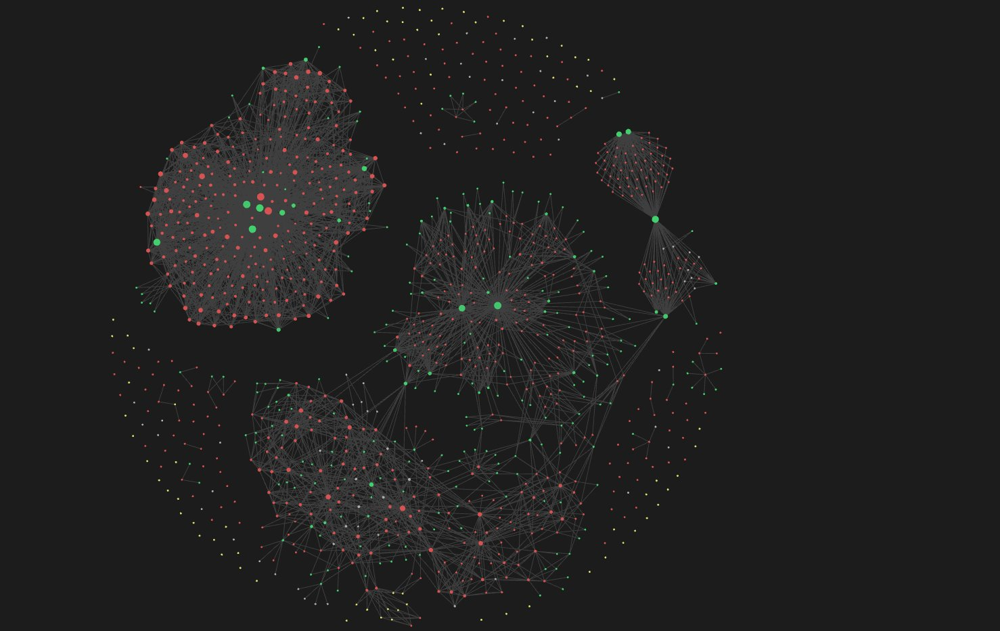

OBSIDIAN · PLUGIN · MCP
Repo Notebook voor Obsidian
Een Obsidian-plugin die Repo Notebook naar je eigen vault brengt, met BRAT-releases en een MCP-koppeling zodat AI-assistenten rechtstreeks met je notities kunnen werken.
RESULTAAT
Repo-kennis én een AI-koppeling (MCP) rechtstreeks in je Obsidian-vault, met BRAT-releases.

01 HET PROBLEEM
Veel makers leven in Obsidian. Een aparte desktop-app is dan één plek te veel. De kennis over repositories hoort naast je andere notities te staan — doorzoekbaar, linkbaar en van jou.
02 WAT HET DOET
- Alles in je vault
- Repositories worden gewone Markdown-notities met frontmatter. Ze werken met je bestaande tags, links en graph view.
- BRAT-releases
- Installeren en updaten via BRAT, zonder wachten op de officiële community-store. Snelle iteratie met echte gebruikers.
- MCP-koppeling
- Een MCP-server maakt de vault bereikbaar voor AI-assistenten zoals Claude: zoeken in je repo-notities, samenvattingen opvragen, suggesties laten toevoegen.
- Zelfde brein als Repo Notebook
- De analyse- en suggestielogica wordt gedeeld met de desktop-app, zodat beide dezelfde kwaliteit leveren.
03 WAT IK ERVAN LEERDE
Een plugin bouwen dwingt je om je kern klein en overdraagbaar te maken. Wat in de desktop-app ‘vanzelf’ ging, moest hier expliciet en testbaar worden — en daar werd de desktop-app ook beter van.
INTERESSE?
Laten we praten.
Vertel me wat je ervan vindt — of wat je ermee zou willen doen.